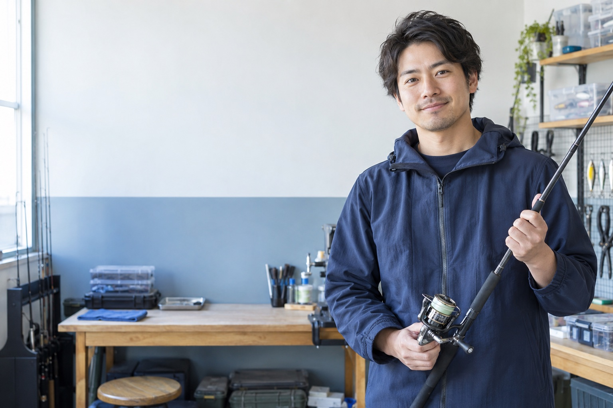
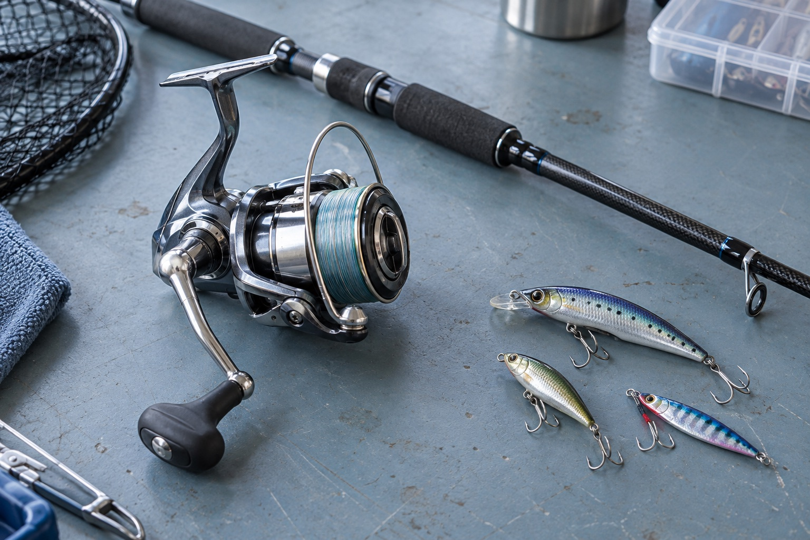
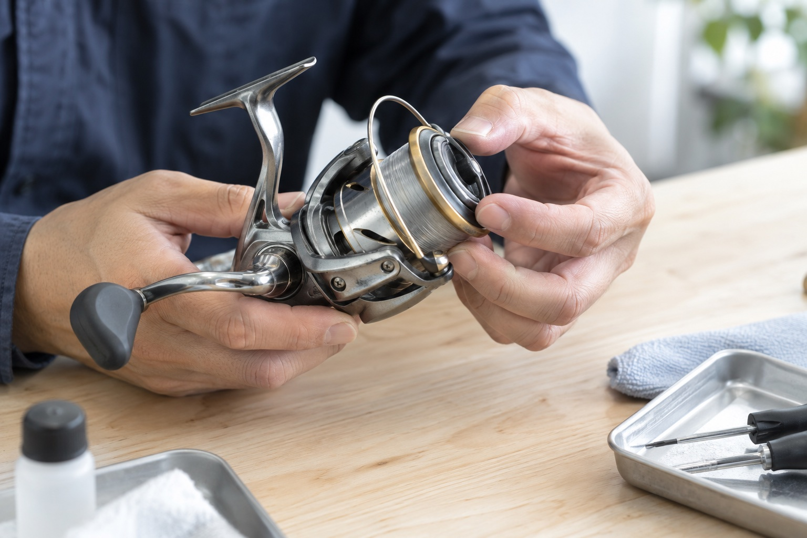

店舗型の買取店
店舗家賃内装費店舗人件費
店舗の維持にかかる固定費
大切にしてきた道具に、次の出番を。
釣具のことがわかる私たちが、
ひとつずつ丁寧に査定します。
写真1枚から相談OK。概算査定は名前・住所の入力不要。

前のリールやロッド。
手放すきっかけが見つからない。
新しい1台や、次の釣行に。
使わない道具を資金に変えたい。
長いロッドも、まとめ売りも。
手間がかかりそうで止まっている。
釣りは、本当に面白い趣味です。
その楽しさから、お金の事情で離れてほしくない。
私たちはそんな思いで、この買取を始めました。
ご自宅で眠っている道具が、誰かの新しい相棒になる。
売ったお金が、あなたの次の釣行につながる。
釣具に、もう一度出番をつくります。

釣具の価値を知る人が、あなたの道具と向き合います。
実店舗を持たず、2名で運営。
店舗の家賃や内装費などを抑えることで、買取価格に還元しています。
店舗の維持にかかる固定費
運営構造を説明する図です。各社の査定価格を比較・保証するものではありません。
あなたの暮らしに合わせて、買取方法を選べます。
梱包も、発送もいりません。
ご自宅までお伺いするので、長いロッドや
タックルボックスごとのお持ち込みも不要です。
全国から、着払いで。
段ボールなどの梱包材をご用意いただき、
ご自宅から釣具をお送りください。
梱包材はお客様にご用意いただきます。
1点からOK。古い道具・傷のある釣具・故障品やパーツも査定対象です。値段がつかない場合も、無料でお引き取りします。
買取実績や参考相場は、確認済みのデータに合わせて掲載できます。
電話も来店も不要。LINEから、気軽にご相談ください。
釣具の写真をLINEへ。
InstagramのDMでも受付。
写真をもとに金額の目安を
ご案内します。
東京23区は出張買取。
全国からは郵送で。
査定額をご確認いただき、
ご了承後にお支払い。

写真による概算査定では、名前・住所の入力は不要です。査定額に納得できない場合も、費用はかかりません。
手元の写真はAI生成の仮画像です。
出張費・送料・査定料・
キャンセル料・返送料無料。
お引き取りをご希望の道具は、
無料でお引き取りします。
許可を取得した事業者が
責任を持って対応します。
お預かりする個人情報は、
お取引以外に使用しません。
気になることは、
LINEでもご相談いただけます。
やり取りはLINEまたはInstagramのDMで行います。こちらから営業電話をかけることはありません。
写真だけで概算査定できます。買取時の手続きとは分けてご案内します。
査定対象です。古いモデルやパーツもご相談ください。値がつかない場合も、無料でお引き取りします。
1点から可能です。まとめ売りも歓迎しています。
お断りいただいても、キャンセル料・返送料ともに無料です。
東京23区です。エリア外の方は全国対応の郵送買取をご利用いただけます。
出張買取は翌日までに査定完了、ご承認後すぐにお振込します。郵送買取はご了承後、即日お振込します。
無店舗で運営しているため、持ち込みには対応していません。出張または郵送をご利用ください。
眠っている道具を、次の釣行のきっかけに。
釣具のこと、気軽に相談してください。
LINEでのお申し込みは24時間受付
ご返信は10:00〜22:00（不定休）
見本では実アカウントに接続しません。PC用QRコードは本番設定時に追加します。